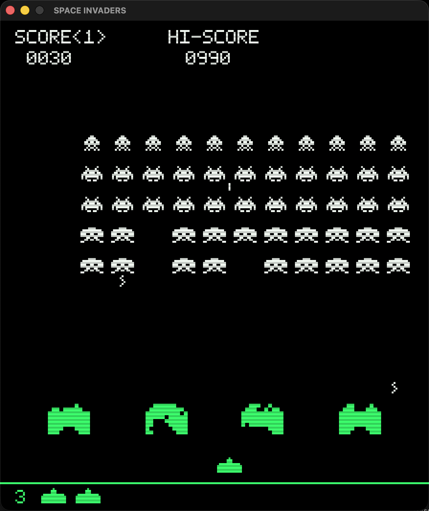
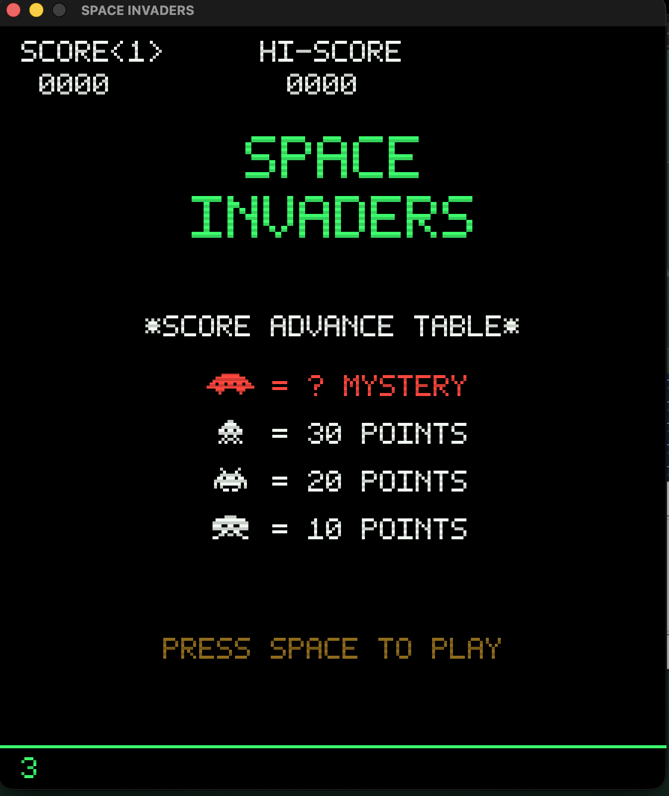

32Space Invaders
Retro arcade for macOS, pixel-perfectArcade rétro pour macOS, au pixel près像素級精準的 macOS 復古街機
A pixel-perfect, native macOS homage to the 1978 arcade classic.Un hommage natif macOS, au pixel près, au classique d'arcade de 1978.向 1978 年街機經典致敬的原生 macOS 作品，像素級精準。
Original 224×256 resolution · CRT scanlines · 8-bit sounds · the four-note march that speeds up as they close in.Résolution d'origine 224×256 · lignes de balayage CRT · sons 8 bits · la marche de quatre notes qui accélère à mesure qu'ils approchent.原始 224×256 解析度 · CRT 掃描線 · 8 位元音效 · 隨著外星人逼近而越來越快的四音進行曲。
Insert coin — downloadInsérez une pièce — télécharger投幣——下載View source on GitHubVoir les sources sur GitHub在 GitHub 上檢視原始碼
- RequiresConfiguration系統需求
- macOS 13+
- DistributionDistribution發行
- Signed & notarizedSigné et notarié已簽章與公證
- UpdatesMises à jour更新
- Auto-updatesMises à jour automatiques自動更新
- LicenceLicence授權
- Free · open source (MIT)Gratuit · open source (MIT)免費 · 開源（MIT）

1978, faithfully1978, fidèlement忠實重現 1978
11×5 invader grid, 2-frame animations, accelerating block movement, and the original one-shot-on-screen rule. Waves start lower each level.Grille de 11×5 envahisseurs, animations en 2 images, déplacement en bloc qui accélère, et la règle d'origine d'un seul tir à l'écran. Les vagues partent plus bas à chaque niveau.11×5 的外星人方陣、2 格動畫、整體加速移動，以及原版「畫面上只能有一發子彈」的規則。每升一關，敵陣起始位置就更低。
Destructible shieldsBoucliers destructibles可破壞的掩體
4 bunkers eroded shot by shot — and chewed through by descending invaders.4 bunkers érodés tir après tir — et rongés par les envahisseurs qui descendent.4 座掩體會被一發發子彈侵蝕——也會被下降的外星人啃穿。
8-bit soundsSons 8 bits8 位元音效
Every effect is a code-generated square wave: pew, boom, UFO siren, and the four-note bass march. Press M for silence.Chaque effet est une onde carrée générée par le code : pew, boum, sirène d'OVNI et la marche de basse à quatre notes. Appuyez sur M pour le silence.每個音效都是以程式碼產生的方波：咻、轟、幽浮警笛，以及四音低音進行曲。按 M 即可靜音。
CRT lookLook CRTCRT 外觀
Scanlines, phosphor green and gel-overlay tints, hand-made 5×7 bitmap font. Big crisp pixels, zero blur.Lignes de balayage, vert phosphore et teintes de filtres gélatine, police bitmap 5×7 faite main. De gros pixels nets, zéro flou.掃描線、磷光綠與彩色濾片色調，以及手工打造的 5×7 點陣字型。大而銳利的像素，完全不模糊。
Mystery UFOOVNI mystère神秘幽浮
Crosses the top with its warbling siren. 50? 100? 300? One way to find out.Il traverse le haut de l'écran avec sa sirène chevrotante. 50 ? 100 ? 300 ? Un seul moyen de le savoir.帶著顫抖的警笛聲橫越畫面上方。50？100？300？只有一個方法能知道。
Native & safeNatif et sûr原生且安全
Swift + SpriteKit. Developer ID signed, Apple-notarized, automatic updates via Sparkle. Hi-score saved between sessions.Swift + SpriteKit. Signé Developer ID, notarié par Apple, mises à jour automatiques via Sparkle. Meilleur score conservé d'une session à l'autre.Swift + SpriteKit。Developer ID 簽章、Apple 公證、透過 Sparkle 自動更新。最高分會在每次遊玩之間保存。
Score advance tableTable des scores得分表
| TargetCible目標 | PointsPoints分數 |
|---|---|
| UFOOVNI幽浮 | ? Mystery? Mystère？神秘 |
| SquidCalmar烏賊 | 30 |
| CrabCrabe螃蟹 | 20 |
| OctopusPieuvre章魚 | 10 |
Actual gameplayEn jeu實際遊戲畫面

ControlsCommandes操作方式
| KeyTouche按鍵 | ActionAction動作 |
|---|---|
| ← → | MoveSe déplacer移動 |
| SpaceEspace空白鍵 | Fire / startTirer / commencer射擊／開始 |
| P | PausePause暫停 |
| M | MuteCouper le son靜音 |
| Esc | TitleÉcran titre標題畫面 |
Insert coinInsérez une pièce投幣
Free · open source · signed & notarized · macOS 13+ · auto-updatesGratuit · open source · signé et notarié · macOS 13+ · mises à jour automatiques免費 · 開源 · 已簽章與公證 · macOS 13+ · 自動更新